MegaFusion: Extend Diffusion Models towards Higher-resolution Image Generation without Further Tuning
|
|
1Shanghai Jiao Tong University
|
2Shanghai AI Laboratory
|
3Dalian University of Technology
|
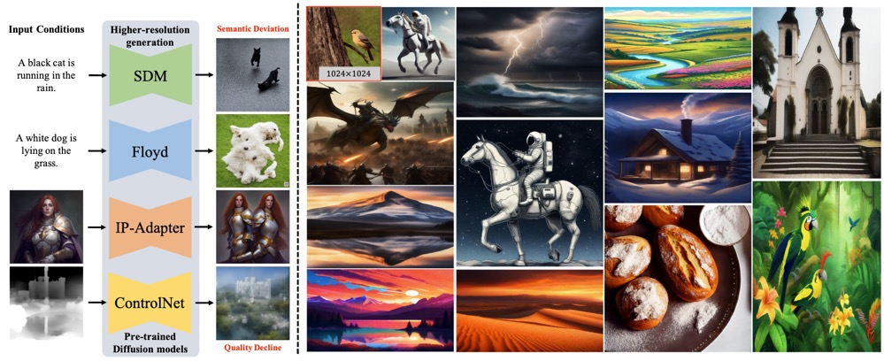
Overview.
(a) Left: Existing diffusion-based text-to-image models struggle with synthesizing higher-resolution images due to fixed image resolution during training, leading to a noticeable decline in image quality and semantic accuracy.
(b) Right: Our proposed tuning-free MegaFusion can effectively and efficiently extend diffusion models (e.g. SDM, SDXL and Floyd) towards generating images at higher resolutions (e.g., 1024×1024, 1920×1080, 2048×1536, and 2048×2048) of arbitrary aspect ratios (e.g., 1:1, 16:9, and 4:3).
We recommend the reader to zoom in for the visualization results.
Overview.
(a) Left: Existing diffusion-based text-to-image models fall short in synthesizing higher-resolution images due to the fixed image resolution during training, resulting in a noticeable decline in image quality and semantic deviation.
(b) Right: Our proposed tuning-free MegaFusion can effectively and efficiently extend diffusion models (e.g. SDM, SDXL and Floyd) towards generating images at higher resolutions (e.g., 1024×1024, 1920×1080, 2048×1536, and 2048×2048) of arbitrary aspect ratios (e.g., 1:1, 16:9, and 4:3).
We recommend the reader to zoom in for the visualization results.
Abstract
Diffusion models have emerged as frontrunners in text-to-image generation, however, their fixed image resolution during training often leads to challenges in high-resolution image generation, such as semantic deviations and object replication.
This paper introduces MegaFusion, a novel approach that extends existing diffusion-based text-to-image generation models towards efficient higher-resolution generation without additional fine-tuning or extra adaptation.
Specifically, we employ an innovative truncate and relay strategy to bridge the denoising processes across different resolutions, allowing for high-resolution image generation in a coarse-to-fine manner.
Moreover, by integrating dilated convolutions and noise re-scheduling, we further adapt the model's priors for higher resolution.
The versatility and efficacy of MegaFusion make it universally applicable to both latent-space and pixel-space diffusion models, along with other derivative models.
Extensive experiments confirm that MegaFusion significantly boosts the capability of existing models to produce images of megapixels and various aspect ratios, while only requiring about 40% of the original computational cost.
MegaFusion Architecture
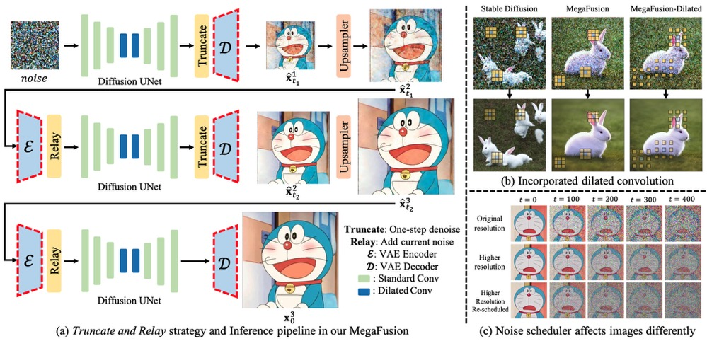
Architecture Overview.
(a) The Truncate and Relay strategy in MegaFusion seamlessly connects generation processes across different resolutions to produce higher-resolution images without extra tuning, exemplified by a three-stage pipeline.
For pixel-space models, the VAE encoder and decoder can be directly removed.
(b) Limited receptive fields lead to quality decline and object replication.
Dilated convolutions expand the receptive field at higher resolutions, enabling the model to capture more global information for more accurate semantics and image details.
(c) Noise at identical timesteps affects images of different resolutions differently, deviating from the model's prior.
Noise re-scheduling helps align the noise level of higher-resolution images with that of the original resolution.
Results
Quantitative Results
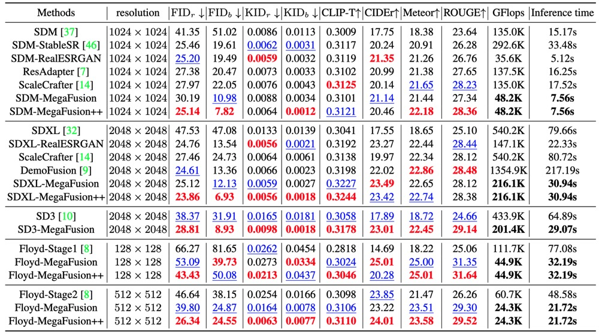
Quantitative comparison.
We compare our boosted models on higher-resolution image generation with representative latent-space and pixel-space diffusion models on the MS-COCO dataset.
Within each unit, we denote the best performance in RED and the second-best performance in BLUE.
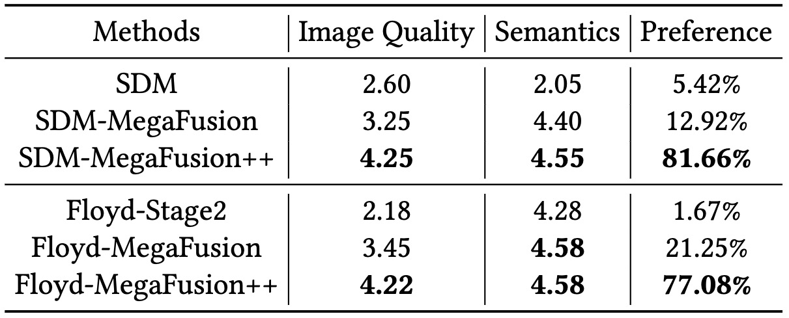
Human evaluation with MS-COCO captions and commonly used prompts from the Internet as input.
Qualitative Results
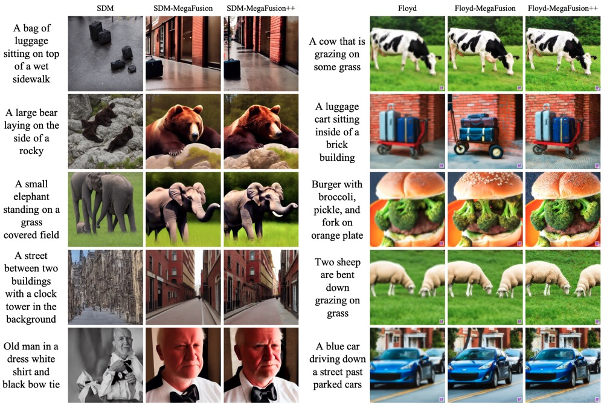
Qualitative results of applying our MegaFusion to both latent-space and pixel-space diffusion models for higher-resolution image generation on MS-COCO and commonly used prompts from the Internet.
Our method can effectively extend existing diffusion-based models towards synthesizing higher-resolution images of megapixels with correct semantics and details.
Please refer to the Appendix for more qualitative results.
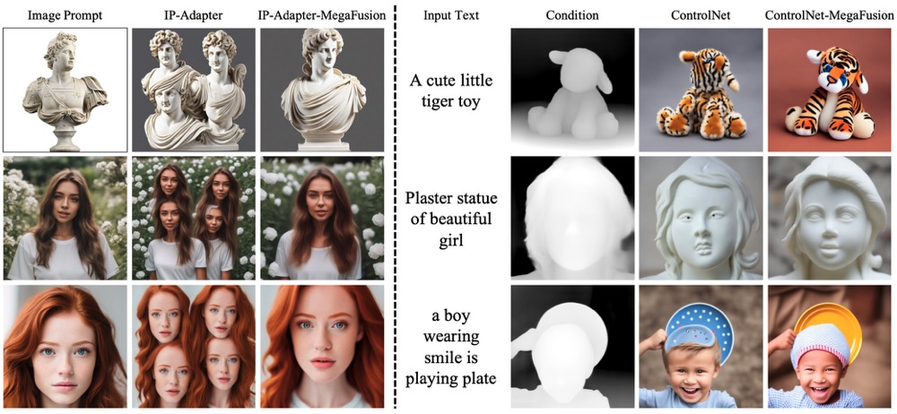
Qualitative results of incorporating our method to models with extra conditional inputs.
Our proposed MegaFusion can be universally applied across various diffusion models, providing the capability for higher-resolution image generation with better semantics and fidelity.
Please refer to the Appendix for more qualitative results.
Ablation Study Results
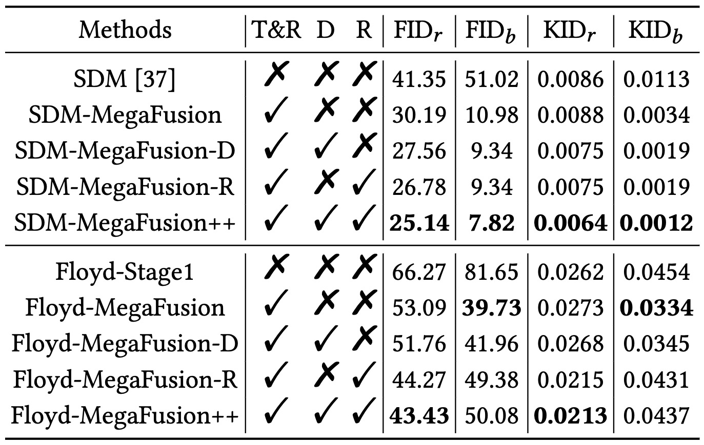
Ablation studies on proposed modules in MegaFusion on MS-COCO.
The modules gradually improve the higher-resolution image generation quality of existing diffusion models, especially in comparison with real images.
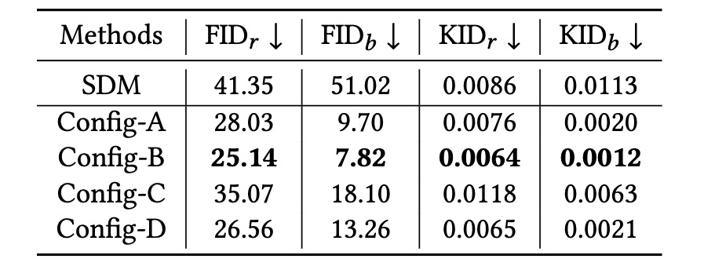
Ablation studies on non-parametric Upsampler function Φ on the MS-COCO dataset.
More Visualization
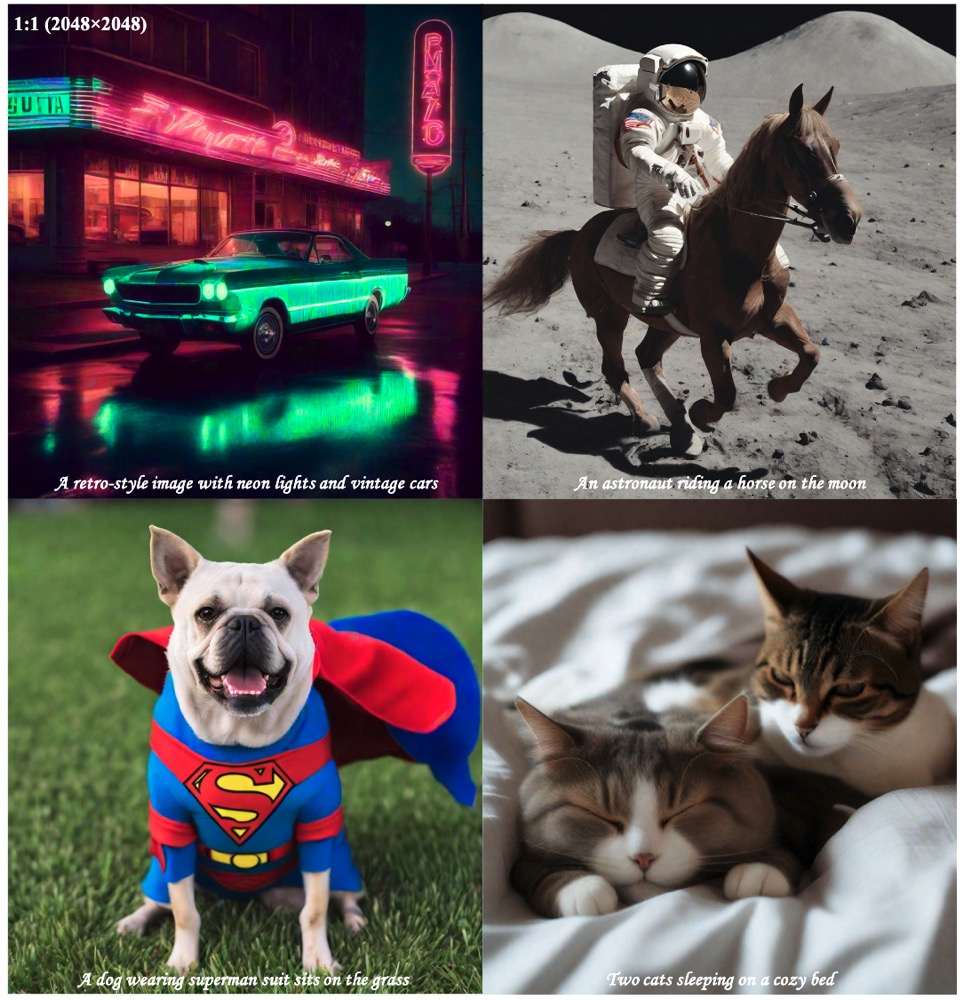
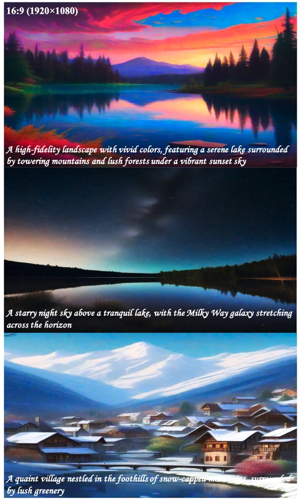
More qualitative results of applying our MegaFusion to SDXL model for higher-resolution image generation with various aspect ratios and resolutions.
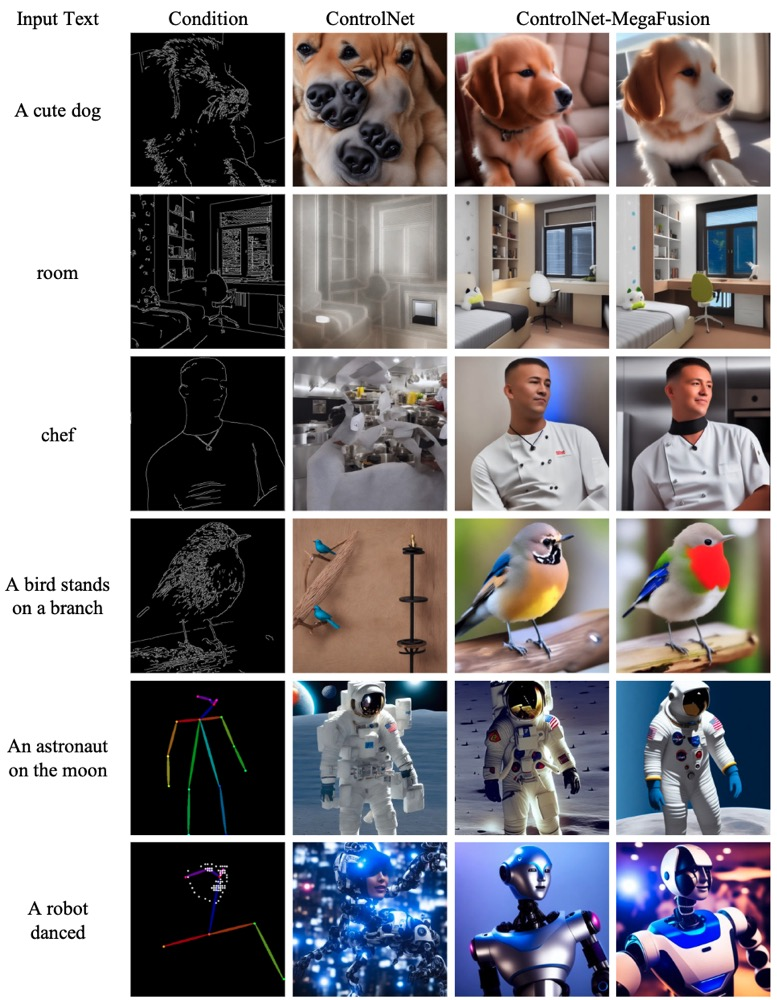
Qualitative results of applying our MegaFusion to ControlNet with canny edges or human poses as extra conditions for higher-resolution image generation with better semantics and fidelity.
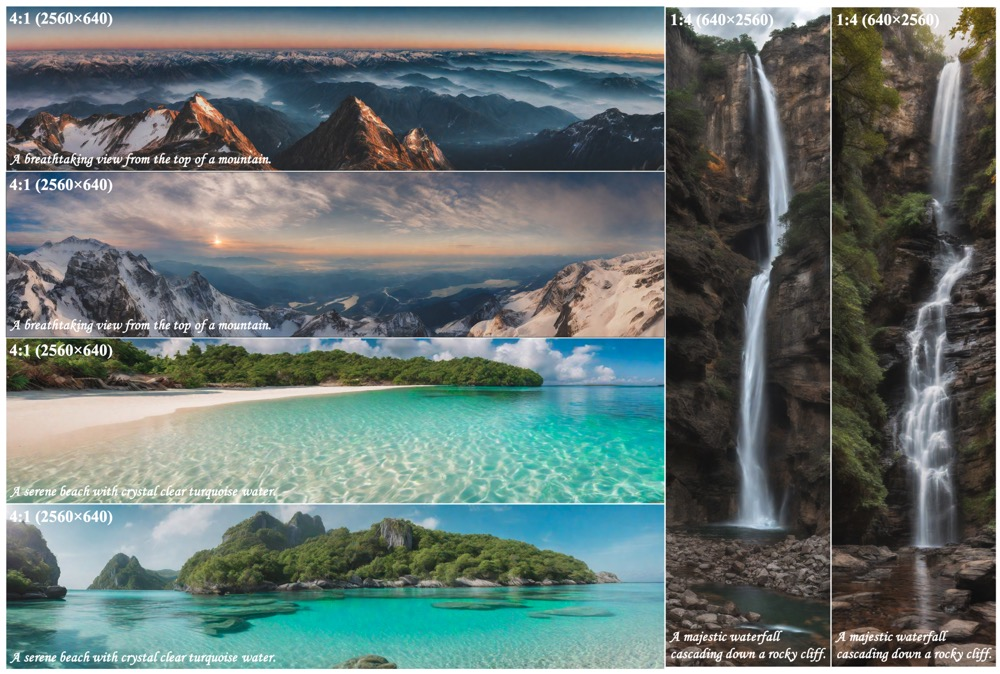
More qualitative results of applying our MegaFusion to SDXL model for higher-resolution image generation with various non-standard aspect ratios and resolutions.
Welcome to check out our paper for more technical details and visualization results!
Acknowledgements
Based on a template by Phillip Isola and Richard Zhang.